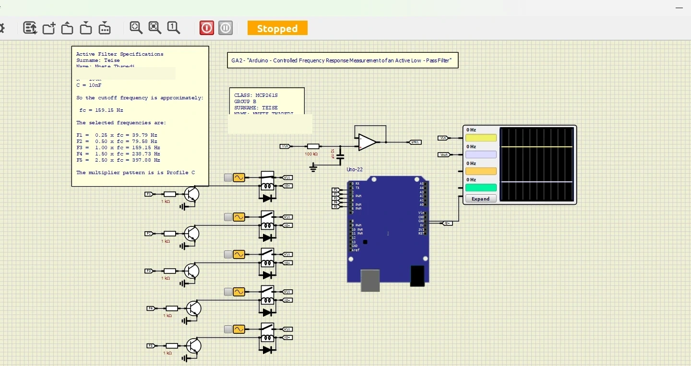
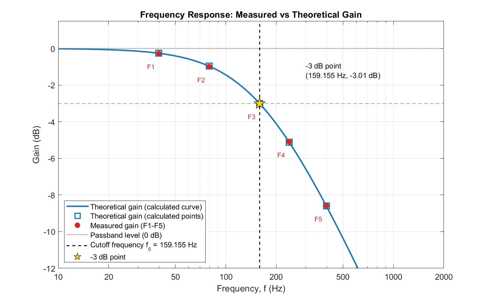
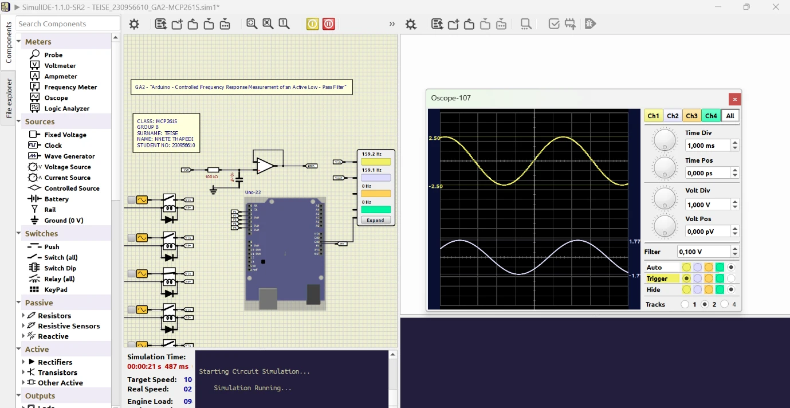
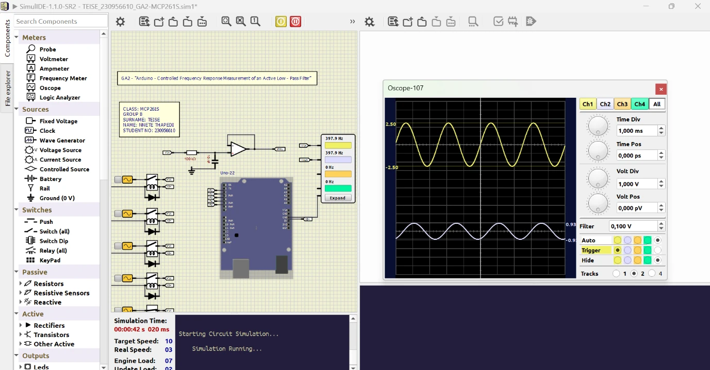

Automatic source control
The Arduino C++ sketch uses a millis() state machine, holds each source for 10 seconds and inserts a 0.3-second all-off gap between selections. This break-before-make approach prevents overlapping source connections.
A simulated test bench that automatically selects five sine-wave sources using an Arduino Uno and relay drivers. Measured filter gain is compared with the response predicted by first-order RC theory.

Cover created from the submitted SimulIDE evidence; student number removed for public sharing.
The five sine waves are produced by SimulIDE Wave Generators, not by the Arduino. The Arduino controls relays to connect one source to the filter input at a time. An RC network removes more of the higher-frequency content, and an op-amp configured as a voltage follower isolates the network from the output measurement.
The Arduino C++ sketch uses a millis() state machine, holds each source for 10 seconds and inserts a 0.3-second all-off gap between selections. This break-before-make approach prevents overlapping source connections.
With R = 100 kΩ and C = 10 nF, the time constant is 1 ms and the expected cutoff is 159.155 Hz. The source at cutoff produced a reported gain of 0.708 (−3.00 dB), compared with the theoretical 0.707 (−3.01 dB).
The values below are transcribed from the project's submitted GA2 report. Input and output voltages are peak amplitudes rather than peak-to-peak values.
| Source | Frequency (Hz) | Vin (Vpk) | Vout (Vpk) | Measured gain | Measured dB | Theoretical gain |
|---|---|---|---|---|---|---|
| F1 | 39.78 | 2.50 | 2.42 | 0.968 | −0.28 | 0.970 |
| F2 | 79.58 | 2.50 | 2.23 | 0.892 | −0.99 | 0.894 |
| F3 | 159.15 | 2.50 | 1.77 | 0.708 | −3.00 | 0.707 |
| F4 | 238.73 | 2.50 | 1.39 | 0.556 | −5.10 | 0.555 |
| F5 | 397.88 | 2.50 | 0.93 | 0.372 | −8.59 | 0.371 |
These figures are extracted from the submitted report. They show the SimulIDE circuit, oscilloscope traces and MATLAB response graph.




Employers can inspect the original engineering work using the public-safe copies of the submitted sources. The simulation source is not required to use the browser demonstration.
GA2_Relay_Selector.ino for Arduino Uno to a .hex file and point the SimulIDE Arduino program property to it. Compiled build outputs are not included in the public package. The report and source copies have identifying student-number text masked for public sharing.